刺球出笼、马蹄环、长孔立柱解环三个任务，各加 very_easy 和 easier 两档。刺球两档已实现，通过了几何检查和 CPU 落稳检查。马蹄环和长孔立柱的方案要先调整，见下文，等你确认后再实现。
| 入口 | 场景实现 | 物体层面检查 | CPU 落稳 | 机器人执行 | Harbor 任务包 |
|---|---|---|---|---|---|
hedgehog_in_cage_very_easy | 已完成 | 已完成 可平移出笼；加夹爪也成立 | 已完成 3 s 移动 0.30 mm | 未开始 | 未开始 |
hedgehog_in_cage_easier | 已完成 | 已完成 需绕所夹的刺转 75°；加夹爪也成立 | 已完成 3 s 移动 0.30 mm | 未开始 | 未开始 |
horseshoe_ring_very_easy | 方案待确认 | 未开始 | 未开始 | 未开始 | 未开始 |
horseshoe_ring_easier | 方案待确认 | 未开始 | 未开始 | 未开始 | 未开始 |
slotted_post_ring_very_easy | 方案待确认 | 未开始 | 需 GPU | 未开始 | 未开始 |
slotted_post_ring_easier | 方案待确认 | 未开始 | 需 GPU | 未开始 | 未开始 |
“物体层面检查”只计算物体和固定件的几何，不含机械臂、夹爪、IK 和动力学。“需 GPU”：长孔立柱的绳是 FEM/IPC，必须用 GPU 仿真；共享 GPU 目前被其他用户的作业占满。
我的实现
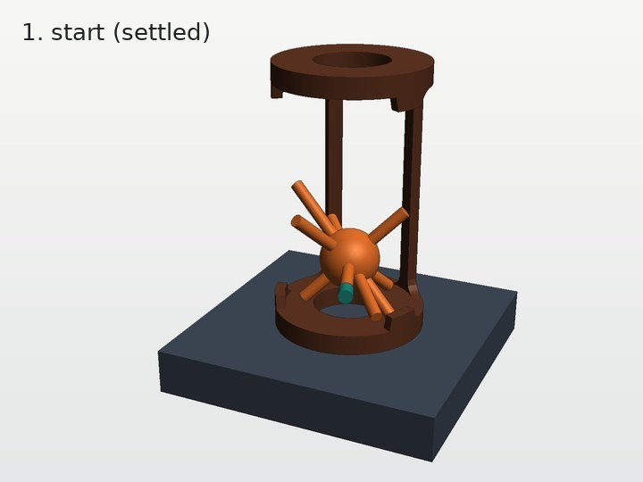
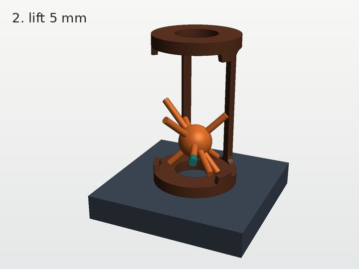
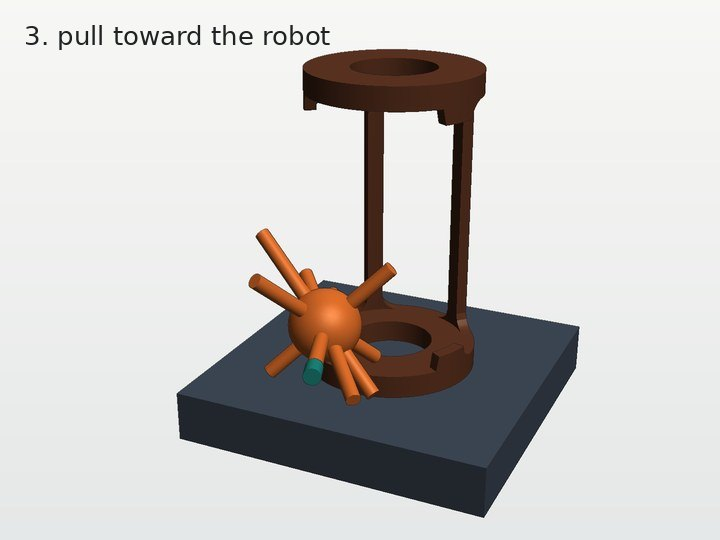
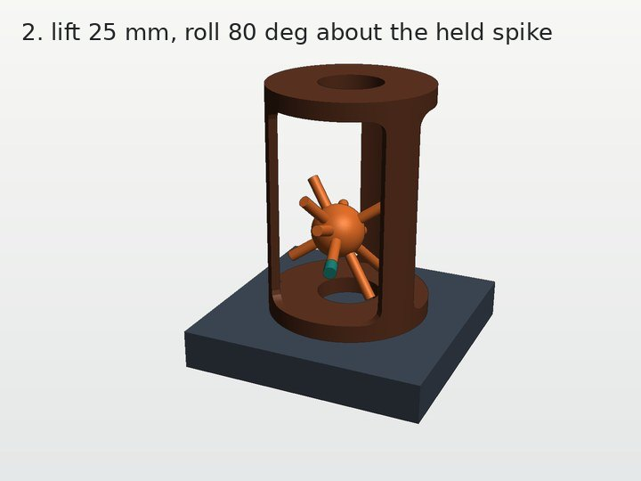
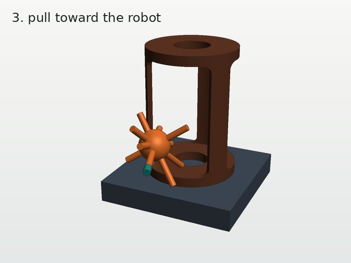
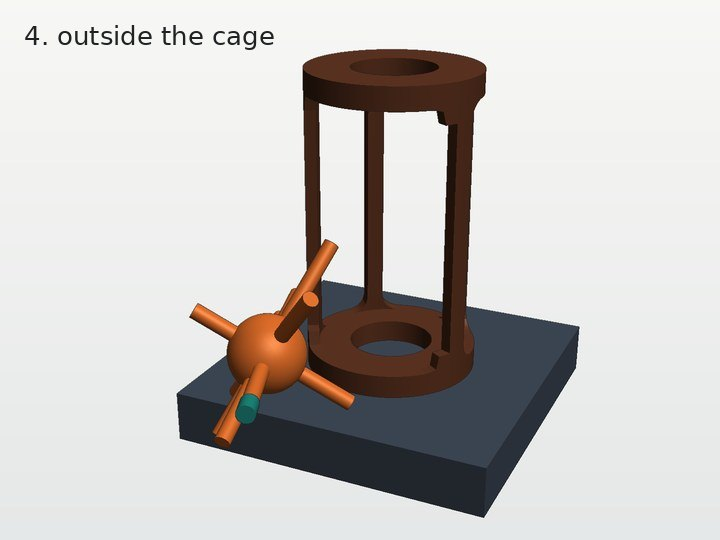
| 检查 | very_easy | easier | 方法 |
|---|---|---|---|
| 初始位姿与笼、底座、桌面不相交 | 是 | 是 | 精确网格，闭合碰撞件做包含检查 |
| 朝向机器人的刺伸出笼壁 | 19.5 mm | 19.5 mm | 要求 ≥ 15 mm，夹爪只夹笼外这一段 |
| 保持初始朝向能否平移出笼 | 能 | 不能 | 2 mm 平移网格上的广度优先搜索 |
| 证明过的路径（只算刺球） | 抬 5 mm → 朝 172° 直拉 | 抬 15 mm → 绕刺轴转 75° → 朝 174° 直拉 | RigidPathChecker 逐段证明，表面余量 ≥ 1 mm |
| 加 2F-85 夹住该刺 | 直拉出口 10–11/160 | 直拉 0/160；先抬 15 mm，再绕接近轴转 70° 后有出口（抬 20 mm、转 75° 时 4/160） | scripts/design_viewer/exit_check.py --spike 7，手指竖向和侧向开合结果相同 |
| 扰动稳健性（位置 ±1 mm、姿态 ±2°，20 个样本） | 20/20 仍能平移出笼 | 20/20 仍出不去（零余量和 0.5 mm 余量都是） | 同上平移搜索 |
| 从写入的位姿再落稳 3 s | 移动 0.30 mm，转 0.00° | 移动 0.30 mm，转 0.00° | Genesis CPU，25 ms tick / 40 子步，机器人保持 home（位姿是在 106 mm 笼中落稳得到的） |
在 12 个平面静置姿态 × 72 个偏航角中，统计能放进笼子的朝向里有多少能直拉出笼（very_easy 型），有多少转一次才能出（easier 型）。这一步只用静态几何，候选还要经过落稳再判定。
| 朝机器人的窗宽 | 能放进笼子的朝向 | very_easy 型 | easier 型 | 都不行 |
|---|---|---|---|---|
| 96 mm | 94 | 0 | 0 | 94 |
| 100 mm | 115 | 0 | 14 | 101 |
| 106 mm（采用） | 155 | 37 | 21 | 97 |
| 116 mm | 410 | 389 | 5 | 16 |
加上“有一根刺朝向机器人、伸出笼壁 ≥ 18 mm”的条件后（偏航角步长 2°），能满足的朝向里 very_easy 型 / easier 型的数量：102 mm 17 / 3，106 mm 26 / 5，110 mm 38 / 8，116 mm 60 / 8。现在的位姿在 106 mm 下是 easier 型，在 116 mm 下是 very_easy 型，所以两档只差窗口宽度。
设计过程记录 第一版只按刺球设计（转轴是笼的 x 轴），2F-85 检查发现夹爪伸进笼里夹球心时 very_easy 只有正对窗口中心才行、easier 转动时手指扫到环箍。第二版改为夹笼外的刺、绕刺轴转，两档共用 106 mm 窗口，但 very_easy 加夹爪后只剩 1/160 个直拉方向。现在的第三版把 very_easy 的窗口放宽到 116 mm，可行方向增加到 10–11/160。夹爪检查由另一个 session 的 scripts/design_viewer/exit_check.py --spike 完成。
边界：夹爪检查只含 2F-85，不含 Panda 手腕、IK 和动力学；机器人完整执行和 Harbor 任务包是下一步。
topogym/tasks/hedgehog_in_cage/ below_easy.py # 共享构造与共享的落稳位姿；cage(exit_window_mm) 生成窗口表 hedgehog_in_cage_very_easy.py # 只有一行：cage(116.) hedgehog_in_cage_easier.py # 只有一行：cage(106.) topogym/config/variation_records.py # 两条登记：别名 very_easy / easier，pool='below_easy' topogym/planning/hedgehog_in_cage/ below_easy_witness.py # 平移可达性、证明路径、CPU 落稳检查（可命令行运行） object_oracle.py # frozen_problem 增加两档的版本号（一行） ci_checks/test-hedgehog-below-easy.py # 7 项：登记与固定参数 5 项，设计意图 2 项 docs/develop/tasks/hedgehog_in_cage_zh.md # 新增一节
切换难度只需换 variation_id。别名和 easy / medium / hard 并列，seeded 采样仍只抽原三档：
import topogym
env = topogym.make("hedgehog_in_cage", variation_id="very_easy") # 或 "easier"、"easy"、"medium"、"hard"
新建一档：继承 HedgehogBelowEasyTask，在 variant_parameters 里给出 cage(窗宽 mm)；如需换刺球位姿，再给出 ball_pose（笼坐标系下的落稳位姿），然后登记一条记录。两个旋钮都锁在 fixed_parameters 里，具名入口不能被覆盖。
运行检查：
python -m topogym.planning.hedgehog_in_cage.below_easy_witness --variant easier --output runs/below_easy/easier --settle-seconds 3
python ci_checks/test-hedgehog-below-easy.py # 约 40 s，不需要 GPU
没有改动 hedgehog_in_cage.py 生成器和 common.py：easy 的可解性记录按 SHA-256 锁定了这两个文件。原有回归测试（目标描述 10 项、辅助抓取 4 项、oracle runner 16 项、终止判定 7 项）全部通过。
你的判断对马蹄环和长孔立柱成立，对刺球不成立。
| 任务 | 解法的性质 | 知道解法以后，难度来自哪里 | 两档的定位 |
|---|---|---|---|
| 刺球 | 没有固定套路，要在 SE(3) 里一段段找通道 | 需要转几次、通道余量多大、是否换抓（easy 的已知路线有 20 个关键位姿、两次抓取） | 0 次转动 → 1 次转动 → 多次转动加换抓，难度连续分级 |
| 马蹄环 | 一个技巧：两只马蹄折合或成直角，环从 U 形底部滑出 | 操作精细度（三档已知路径的最小间隙 0.15 / 0.13 / 0.12 mm），hard 还要对准环的相位 | 两档都在技巧之下，不需要知道技巧 |
| 长孔立柱 | 5 步定式（Fisherman's Folly） | 软绳操作：20 mm 环管侧立穿过 28 mm 槽、让珠过环 | 可以按“定式还剩几步”分级 |
结论：马蹄环和长孔立柱的新两档本来就设计在分水岭之下，考察的是接近、抓取、取出和一次转动，这正是计划要求的。另外，这个基准是让模型写代码控制机器人；对模型来说，感知、选抓取姿态、避碰本身就不简单，所以这两档不算多余。需要改的不是档位思路，而是马蹄环的具体方案（下一节）。
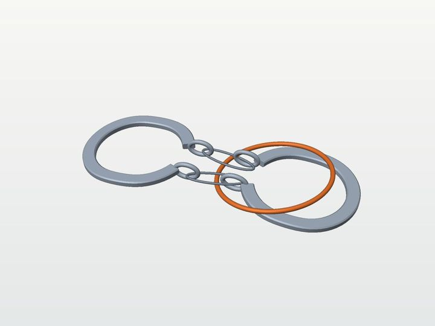
easy 的初态（5 s 落稳后）：两只马蹄平躺，环斜压在右侧马蹄上，环的左缘压在链段下面。
仓库现状 三档初态都是落稳后的姿态：马蹄平躺，环的法向接近竖直（倾斜约 10°），环心在右侧马蹄上方。
影响 我之前的 very_easy（放大环，沿链方向直拉）默认环是竖着套在链段上的。在平躺初态下，只要环还套着链段，取出前就必须先把环立起来，做不到“全程只平移”。环孔放大到比整只马蹄还大时，落稳过程中环可能自己滑脱；common.py 的注释记录过模板装配落桌后环会滑脱。
very_easy：环不和链段缠绕，放在马蹄组件旁边或上方；抓起环搬到目标区，不能带动其余部件。
easier：环放大到孔径大于马蹄宽度，仍套着两条链段；抓住环、立起来（一次转动），再沿链方向拉过一侧马蹄。
不加新部件。easier 和刺球 easier 是同一类操作。
例如两只马蹄已经折合，环停在 U 形底部附近，只剩“滑出”这一步。
更贴近原谜题，但要先构造这些中间状态，并验证它们的几何和落稳，工作量明显更大。
你的约束 不加任何新部件，只改现有部件的尺寸或初始位置。
| 方案 | 做法 | 评估 |
|---|---|---|
| 你 very_easy | 环在绳的上面，沿立柱提起越过柱顶 | 符合 very_easy，拓扑上只需提起。现有几何里绳在约 94 mm 高处过槽，环在根部，绳一定在环上方；要让环在绳上面，只能让环搁在绳尾上（由 FEM 绳托住，初态稳定性要在 GPU 上验证），或者让绳不穿槽。 |
| 你 easier | 端盘做得小于环内径，环越过柱顶后再越过端盘 | 偏难。环越过柱顶时会把绳带上来，绳随之穿过环孔；之后要让绳的两端（珠加小端盘）都穿过环，或让环侧立穿过柱槽一次。这需要双臂配合操作软绳，难度大约介于 easier 和 easy 之间。 |
| 我 定式中间状态 | 开局设在定式解法的 s3 或 s4（下表） | s4 只剩“珠 2 过环”一步：环顺着绳弯滑过珠 2 就脱出。s3 先要把环侧立穿过柱槽（一次明确的转动：20 mm 管过 28 mm 槽），再做 s4。只改绳的走向（穿槽两次），部件不变。 |
| 状态 | 动作 | chain(绳) |
|---|---|---|
| S0 | 初态（当前三档） | [S1⁺, H⁺, S2⁺] |
| s1 | 端盘 2 一侧反穿柱孔 | [S1⁺, H⁺, S2⁺, H⁻] |
| s2 | 环沿立柱越过柱顶 | [S1⁺, R⁻, H⁺, R⁺, R⁻, S2⁺, R⁺, H⁻] |
| s3 | 珠 2 过环 | [S1⁺, R⁻, H⁺, S2⁺, H⁻, R⁺] |
| s4 | 环侧立穿过柱孔 | [S1⁺, H⁺, R⁻, S2⁺, R⁺, H⁻] |
| s5 | 珠 2 再过环 → 环孔 R 不再出现，环脱离 | [S1⁺, H⁺, S2⁺, H⁻] |
H 是柱孔，R 是环孔，S1、S2 是两颗珠的孔；chain(绳) 是绳从一端到另一端依次穿过的孔和穿出面（Cabalar 与 Santos，Fisherman's Folly，Figure 4）。我的建议 very_easy 用你的“环在绳上面”或 s4；easier 用 s3。两者都要在 GPU 可用后做 FEM 落稳验证。
计划原文
very_easy：主要考察机械臂找合适角度接近、抓住目标物、取出并搬运的能力，尽量减少抓取后的解谜操作。
easier：在上述基础上增加少量约束，让机械臂抓住物体后需要调整角度或方向，再完成取出和搬运；整体仍比当前 easy 简单。
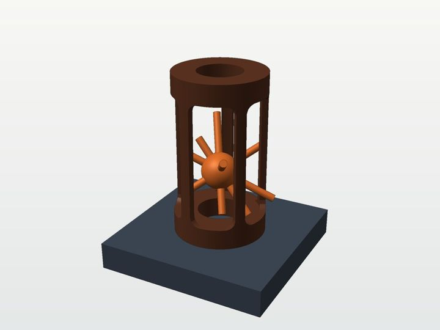
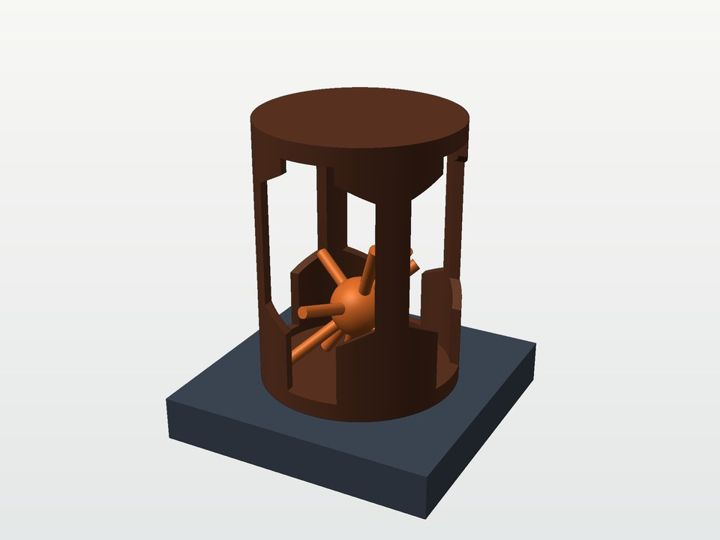
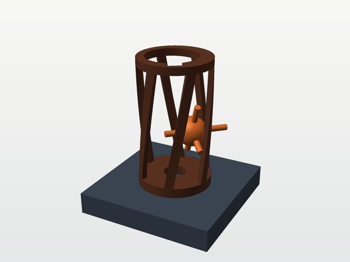
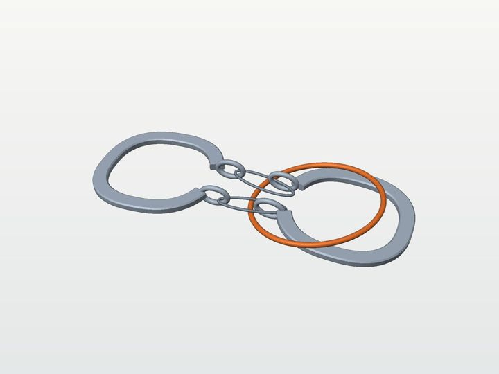
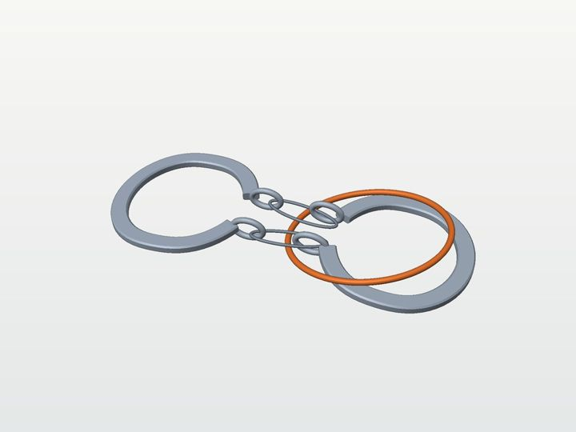
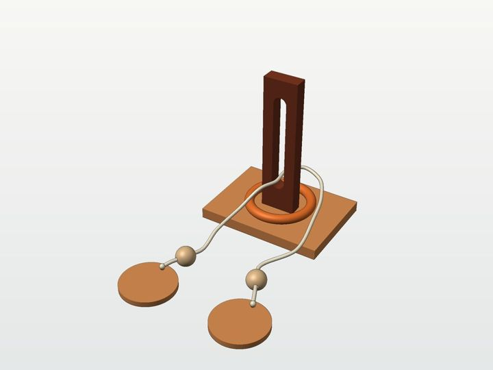
| 任务 | 网上的定式解法 | 机器人完整执行（仓库） |
|---|---|---|
| 刺球 | RADEMIC 提示：CLASSIC 找最宽的孔和两根最短的刺；GEN 让两根最短的刺进入笼盖空隙 | easy、medium 已完成（2026-09-30）；hard 未完成 |
| 马蹄环 | 一只马蹄翻过来与另一只成直角，环从 U 形底部滑出 | 当前三档没有；早期 baseline 有 |
| 长孔立柱 | Fisherman's Folly 5 步（见上表） | 没有 |
来源：RADEMIC、Wayne's Word、Cabalar 与 Santos。三档渲染图由仓库生成器的网格在 CPU 上渲染。